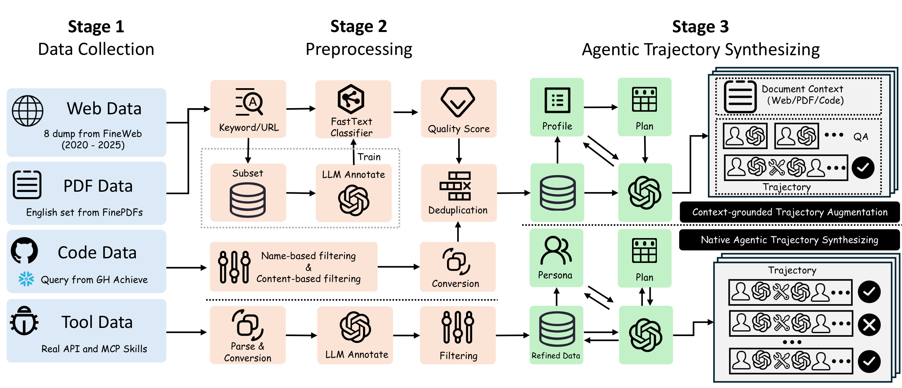
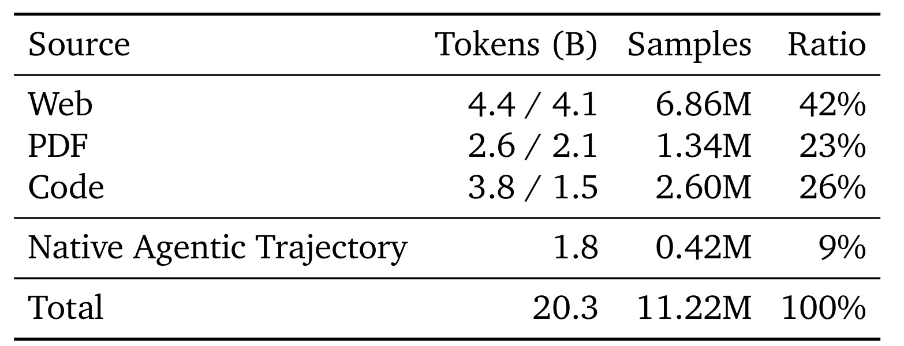
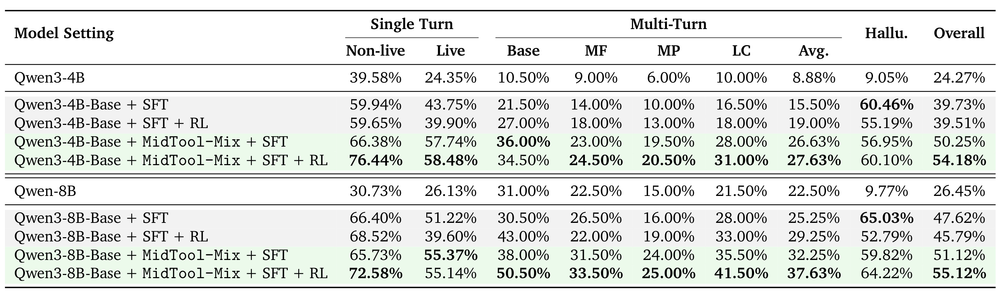
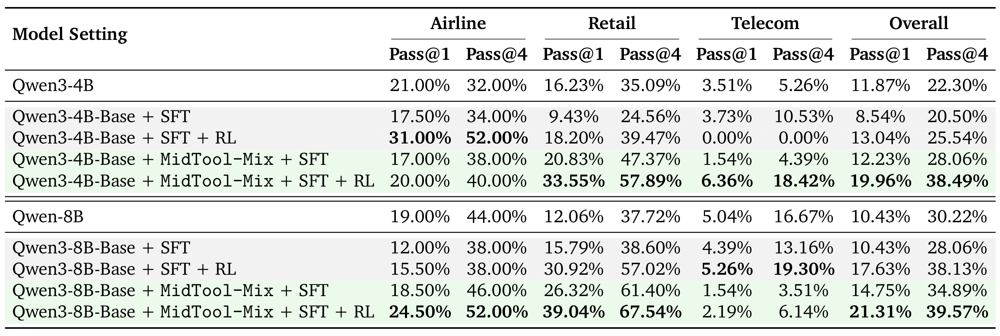
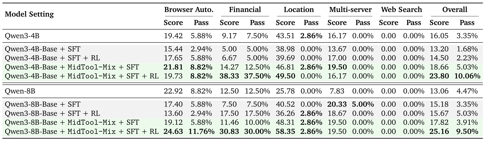
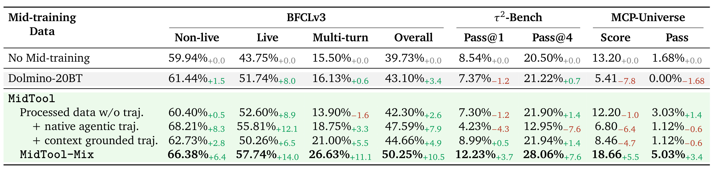
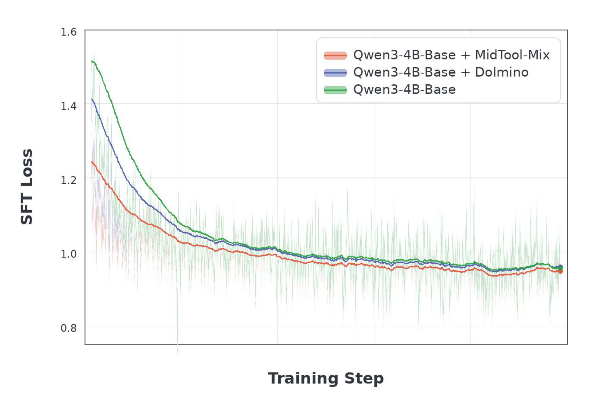
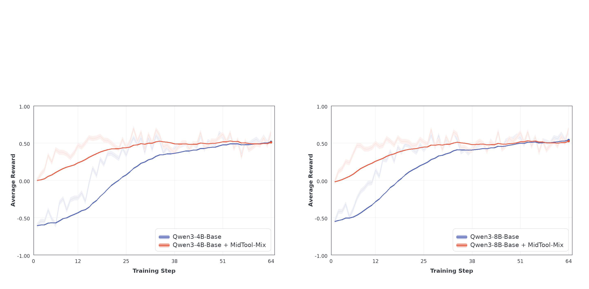
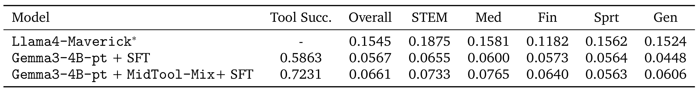

MidTool：面向 Agent 工具使用的中训练数据合成
MidTool 研究的不是又一个工具调用后训练配方，而是一个更早的能力注入点：在通用预训练与 SFT/RL 后训练之间，用专门的工具使用语料做 mid-training。论文由华盛顿大学、Snowflake 与北卡罗来纳大学教堂山分校合作完成，一作 Fengqing Jiang 的主机构为华盛顿大学，其工作在 Snowflake 期间完成。论文于 2026-08-20 公开，入口为 arXiv:2608.20314。PDF 给出了 Hugging Face 数据/模型集合提示，但本轮外部访问返回 HTTP 401，因此只能记录“链接存在”，页面内容、许可证与是否可直接下载未独立核验。
现有工具使用能力大多被留给窄而精的 SFT/RL 后训练，却要求这一阶段同时学会工具识别、schema 参数根据、缺失信息澄清和多步执行。支撑这些行为的知识其实分散在开发者文档、PDF、代码库、API 规格和 MCP skills 中，很少天然以干净的 Agent 轨迹出现。
1. 背景和问题
工具使用已从“模型会不会输出一个函数 JSON”扩展为完整的交互能力组合。一个可靠的 Agent 要先判断当前问题是否需要外部工具，再从可用 schema 中选出正确工具，从长且噪杂的上下文抽取参数，按顺序或并行方式组合多个调用，还要在必填信息不足时先向用户澄清，而不是自行补齐。工具回传之后，Agent 还必须把返回证据融入后续判断和最终回答。这些原子能力同时涉及语义理解、结构化生成、长上下文检索、计划和错误恢复，很难由少量漂亮轨迹一次性教会。
过去数据工程的重心多放在后训练。ToolLLM、APIGen 等工作扩大了真实 API 和可校验函数调用样本；APIGen-MT、TOUCAN 等开始构造多轮人机交互与 MCP 环境中的 Agent 轨迹。这些路线有效，但它们默认基座模型在进入 SFT 之前对工具知识的准备并不均匀。一旦训练轨迹只覆盖有限的工具列表、参数样式与转轮模式，模型就可能记住“怎样填已见 schema”，却没有形成识别未见工具边界和工作流的先验。论文把这种偏差称为后训练负担：较窄的监督不仅要对齐输出格式，还要补课广泛的工具概念和执行知识。
问题的另一面是，工具知识并不只存在于轨迹。开发者手册会写明参数约束和异常处理，PDF 中有更长的操作程序，代码库展示真实调用和编排模式，API/MCP 定义则直接暴露可执行的工具边界。但这些资料多是非结构化、包含抽取噪声，也没有标准的 user/assistant/tool 转轮。MidTool 的核心研究问题因此很具体：能否把这些分散知识转成一个足够大、又不脱离真实工具结构的中训练混合，使模型在进入后训练前就获得可迁移的工具先验？
这里的 mid-training 是独立阶段，位于通用预训练和指令/强化后训练之间。近期工作已用它强化数学、科学推理、深度研究、代码和软件工程，但“通用工具使用”的能力面更异质：既有文档和代码知识，也有 schema，既有单步参数抽取，也有多工具串并行编排和缺失信息恢复。MidTool 不声称中训练可以替代 SFT/RL；它的假设是，更好的中训练初始化会让相同的后训练配方更容易学、迁移更广，而简单扩大参数不一定能补齐这个数据缺口。
对数据管线而言，难点不只是“抓得多”，还要把不同形态的信号放在正确监督位置。文档可以说明工具功能和流程，但未必给出可执行调用；代码会暴露真实参数和错误处理，但大量文件是二进制、日志或与教学无关的实现细节；API/MCP 定义有准确 schema，但只看定义很容易生成大量简单单调用，缺少多轮澄清和异常恢复。这就要求管线一边保留广度，一边为可训监督增加根据、执行与严格校验，还要防止把评测仓库或参考答案带入语料。
因此，论文需要同时回答三层问题。第一层是数据本身：20.3B-token 混合中有多少源语料、上下文增强和原生 Agent 轨迹，它们是否真正覆盖工具多样性；第二层是与后训练的关系：在同一 SFT/RL 数据和资源下，中训练是否提供更好的起点；第三层是外推边界：收益是只出现在单轮 function calling，还是能迁移到长上下文、缺失参数、多轮垂域交互和未见 MCP servers。只有这三层证据都成立，才能说它学到的是通用工具先验，而不是给特定 benchmark 增加了更多相似样本。
评价这一主张还必须排除两个常见混淆。其一是参数规模：如果只比较不同大小模型，能力增长可能来自容量而不是数据；其二是后训练资源：若新方法同时使用更多 SFT 或 RL 轨迹，增益也无法归因于中训练。MidTool 因而在 4B 与 8B 两个规模内分别保持后训练数据和配方一致，再观察加入 20.3B-token 混合前后的变化；同时通过基准黑名单与域外 MCP 评测降低直接污染解释。这个设计不能证明绝对无泄漏，却把核心因果问题收紧为“相同基座规模和后训练预算下，先学工具语料是否更好”。
2. 方法
2.1 四类数据源：广度与可执行性的分工
Stage 1 先收集四个互补源族。Web 部分使用 FineWeb 处理后的 Common Crawl，从 2020–2025 年的多个 dump 取样，覆盖 API 参考、开发文档、故障排查、教程和 CLI 指令。PDF 部分来自 FinePDFs 的英文子集，补充手册、产品指南与长篇流程资料。它们共同提供广泛的术语和工作流知识，但 PDF 抽取噪声更高，后续阈值也更严。
Code 数据则从 Snowflake GH Archive 事件启动仓库发现，一个切片聚焦 Agent/MCP 项目，另一个切片选择主流编程生态中活跃、有社区信号的库、SDK、框架、示例和教程。个人项目、fork、benchmark 与数据集仓库被排除，已知 BFCL、τ-Bench/τ2-Bench、MCP-Universe 等评测仓库还在爬取前进入持续维护的黑名单。Tool 数据单独收集 REST APIs 和 MCP skills，直接暴露 endpoint、必填参数、schema 与可调用边界。这四类数据的分工是：Web/PDF 给知识与流程广度，Code 给可执行模式，API/MCP 给可校验的工具结构。
2.2 源特定预处理：代码筛选与 Web/PDF 四阶段过滤
Stage 2 没有对所有源强行使用同一套清洗。代码先按扩展名排除二进制、模型权重和日志，再用 StarCoder 类启发式检查行数、平均/最大行长与字母比例，Jupyter Notebook 被转成 Python 文本。精确去重使用归一化文本的 SHA-256，近重复使用 MinHash LSH。对通过仓库级门槛的项目，只保留 docs、examples、tutorials、guides、samples、cookbook 等文档化目录，避免把整个巨型库中与工具学习无关的源码全部倒入。
Web/PDF 走四阶段：第一步用软件开发词表、文档站 URL 模式与代码结构做高召回预筛；第二步从 1M Web 与 3M PDF 样本中抽取 seed，由 Qwen2.5-7B-Instruct 标注文档、教程、配置、debug 轨迹等正例，训练 fastText 轻分类器；第三步检查语言置信度、长度、词数、符号密度与代码占比，PDF 另加 OCR 质量过滤；第四步再用 MinHash LSH 跨源/分片去重。这一阶段的输出不是立即可训的 Agent 对话，而是能支撑后续根据和合成的高价值技术文档池。
2.3 双分支轨迹合成：上下文根据与原生执行
Stage 3 把工具使用缺口拆成两类：grounding 缺口指模型无法从现实文档中识别工具边界、参数和流程；execution 缺口指它即使看到 schema，仍不会多轮计划、请求缺失信息、排序调用或从不完整交互中恢复。Figure 2 中上下两条 Stage 3 路径就是为这两个缺口分别设计。

Figure 2 要从左向右读，但不是所有源都经过同样步骤。Web/PDF 先走关键词/URL、fastText、质量打分和去重；Code 先做名称/内容筛选和转换；Tool 数据则先解析并规范化真实 API/MCP 定义。上分支把 Web/PDF/Code 文档转成 profile 和 plan，产生与原始上下文绑定的 QA/轨迹；下分支从可执行工具出发，在 persona、plan 和调用回路中生成原生 Agent 对话。右侧结果框中的勾/叉强调了合成后还有校验与丢弃，并非教师模型输出全量进入数据集。图中箭头还显示 profile/plan 不只是一次生成提示，它们与质量、可行性和数据精炼形成反馈，目标是把丰富度分配给更可靠的源，而不是平均生成简单单调用。
Context-grounded 分支先做轻量关键词预筛，然后用 Qwen3-235B-A22B-Instruct-2507 为文档打质量分并产生 affordance profile。Profile 不只写“有没有工具”，还记录是否能推断工具响应、schema/API 结构、CLI/代码使用、工作流、工具拓扑和领域术语。低于阈值的文档仍可以作为源语料保留，但不做增强；通过的文档由规则规划器根据质量分配有上限的 QA 类型预算，每篇文档最多一条多轮链。QA 拆解工具选择、schema 参数抽取、格式约束、流程识别、多工具/并行调用等原子能力；轨迹再覆盖顺序执行、参数澄清、工具切换与长上下文推理。
Native agentic 分支先将关联 endpoint/skills 分组，形成 tool inventory，轻量预筛掉低信号源。GPT-5 为每个源打质量分，并判断单调用、多/并行调用、信息缺失轨迹是否可行。通过后，管线恢复开发文档上下文，归一化为可执行 schema，只对描述不足的参数做定向精修。模型生成 persona 和候选 plan，但样本数由确定性 budget controller 根据源质量、工具数、参数结构和可行性分配，优先为高能力源生成多轮行为。GPT-5/5.1/5.2 的混合用于实例化轨迹，随后严格校验转轮顺序、schema 根据、必填参数和工具响应一致性，失败样本带反馈重试后才丢弃。这条分支依赖多个强教师模型，可扩展性不等于低成本，生成偏差也只能由显式校验部分约束。
2.4 MidTool-Mix 混合与训练接口
最终 MidTool-Mix 包含三种成分：经过滤的 Web/PDF/Code 源语料；从这些文档得到的 context-grounded QA/轨迹；基于真实 API/MCP、AWM 合成环境 rollout 和过滤 Nemotron Agentic 轨迹得到的 native agentic 部分。所有轨迹被归一为普通 chat-style 模板，不借助额外特殊控制 token。

Table 2 的斜杠值需要按“源语料 / context-grounded 增强”读取：Web 为 4.4B/4.1B tokens，PDF 为 2.6B/2.1B，Code 为 3.8B/1.5B；它们分别对应 6.86M、1.34M 和 2.60M 样本，在全混合中占 42%、23% 和 26%。Native agentic trajectory 单列 1.8B tokens、0.42M 样本和 9%。因此 20.3B tokens、11.22M samples 不能等同于“20.3B 全是轨迹”；大部分预算仍用于广泛技术语料和与文档根据绑定的增强，原生可执行轨迹是重要但占比有限的切片。附录还表明 Web 以 QA 增强为主，PDF 的 QA+轨迹占比最高，Code 则更多保留原始源，符合三类源在文档性与可执行性上的差异。
论文是数据管线和实证研究，本文没有可复用的核心公式：主文与附录都没有编号的模型、损失、奖励或参数更新方程，只有学习率等超参的科学记数法和占比统计。方法的“训练/推理差异”也很清楚：数据筛选、教师合成与严格校验只在数据构建时发生；中训练把工具先验写入 Qwen3-4B-Base/8B-Base 权重，之后接相同 TOUCAN SFT 和可选 AWM/GRPO RL。基准推理时不再运行 MidTool 数据管线，模型只带着学到的先验面对新 schema、交互环境与工具回传。
3. 实验结果
3.1 对照设计与可比较口径
主实验使用 Qwen3-4B-Base 和 Qwen3-8B-Base，每个规模比较四种配方：Base+SFT、Base+SFT+RL、Base+MidTool-Mix+SFT、Base+MidTool-Mix+SFT+RL，并把已后训练的 Qwen3 发布模型作参考。SFT 固定使用 TOUCAN 中抽样的 100K 工具使用数据；Agentic RL 固定使用 AWM 设置的 526 个合成工具环境。中训练和 SFT 均在 32 张 H200 上运行，RL 用 8 张 B200。这种设计把下游数据、优化配方与计算资源固定，主要变量是“是否先用 MidTool-Mix 中训练”，所以结果能较直接地归因于中训练初始化，但不能外推到更大模型或另一套后训练资源。
附录给出了复现口径：中训练只跑 1 epoch，最大序列长度 8192，AdamW 学习率 3×10⁻⁵，全局 token batch 4M；SFT 长度 32768，学习率 2×10⁻⁵，batch 128；RL 用 GRPO，总共 64 步，每 prompt 16 条 rollout，KL 系数 0.001，最多 20 个 Agent turns。评测覆盖 BFCLv3、经验证的 τ2-Bench 和 MCP-Universe，分别检验函数调用根据、垂域多轮交互完成、以及真实 MCP servers 上的域外工具迁移。
3.2 BFCLv3 与 τ2-Bench：从函数调用到交互完成

Table 3 最强的信号在多轮列，而不只是 Overall 标粗值。4B 的 SFT-only 多轮均分为 15.50%，先加 MidTool-Mix 后做同样 SFT 达到 26.63%，再加 RL 达到 27.63%；Overall 相应从 39.73% 升到 50.25% 和 54.18%。8B 的 SFT-only 多轮均分为 25.25%，MidTool+SFT 为 32.25%，完整配方为 37.63%；Overall 从 47.62% 变为 51.12% 和 55.12%。这与“中训练强化多步组合先验”相符，但表中也有不完全上升的列：8B 的 MidTool+SFT 在 Non-live 上 65.73% 略低于 SFT-only 的 66.40%，4B 完整配方的幻觉分 60.10% 也没有超过 SFT-only 的 60.46%。因此可支持的结论是“难多轮与总体能力稳定增强”，而不是每个子指标都被统一抬高。

Table 4 把对比从参数格式和工具选择推到了实际任务完成。4B 的 SFT-only Overall Pass@1/Pass@4 是 8.54%/20.50%，只加 RL 是 13.04%/25.54%，MidTool+SFT 是 12.23%/28.06%，完整配方达到 19.96%/38.49%。8B 的对应数字从 SFT-only 10.43%/28.06% 上升到 MidTool+SFT 14.75%/34.89% 和完整配方 21.31%/39.57%。收益主要来自 airline 和 retail，尤其 retail：4B 完整配方为 33.55%/57.89%，8B 为 39.04%/67.54%。Telecom 更不稳定：8B 完整配方的 2.19%/6.14% 低于 SFT+RL 的 5.26%/19.30%。这说明中训练先验和 RL 有明显互补，但没有消除垂域差异；弱域的数据覆盖或环境分布仍会决定上限。
3.3 MCP-Universe：广泛迁移与深搜索边界

Table 5 中，4B SFT-only 的 Overall Score/Pass 为 13.20/1.68%，MidTool+SFT 为 18.66/5.03%，完整配方为 23.80/10.06%；8B 从 SFT-only 15.18/3.35% 升到 MidTool+SFT 17.82/3.91% 和完整配方 25.16/9.50%。完整配方在 browser automation、financial 和 location 的 score 有比较清楚的改善，例如 4B financial 从 5.00/5.00% 升到 38.33/37.50%，8B location score 从 40.52 升到 58.35。但 Multi-server 的 pass 多数仍为 0，Web Search 在所有行的 Score/Pass 都是 0.00/0.00%。这组负面数据非常重要：中训练确实学到了 schema 根据、工具选择和未见 API 交互的可迁移先验，但没有自动生成深搜索所需的长时域证据收集、迭代改写查询、跨结果整合和更强 Agent-level control flow。
这也规定了 MidTool 对推荐/搜索 Agent 的可迁移启发。召回或重排系统如果只需要选择查询工具、从用户上下文根据参数、把多个候选源按固定工作流串起来，通用工具中训练可能是有价值的初始化。但一个需要自主决定何时扩展检索、何时停止、如何将冲突证据纳入最终排序解释的 deep-search Agent，仍需专门轨迹和奖励设计。MCP-Universe 的零值不是一个可以忽略的异常列，而是论文对“通用工具先验”外推边界的最清晰标记。
3.4 消融：两条合成分支为何不能相互替代
消融只用 Qwen3-4B-Base+SFT，固定后训练配方，改变中训练数据。阅读 Table 6 要注意其行结构：“+ native agentic traj.”和“+ context grounded traj.”都是在 processed raw sources 上单独增加一个分支，两者是平行变体，不是递进叠加；MidTool-Mix 才同时包含两条分支。Dolmino-20BT 则是 token 预算匹配的通用中训练基线。

Table 6 展示了一种“单项很强，但迁移不完整”的结构。只用过滤源语料，BFCL Overall 从 39.73% 升到 42.30%，但 MCP Score 从 13.20 降至 12.20；单加 native 轨迹时，BFCL Overall 达到 47.59%，强于单加 context-grounded 的 44.66%，说明真实 schema 与可执行轨迹对精确函数调用更直接。但 native-only 的 τ2-Bench Pass@1/Pass@4 降到 4.23%/12.95%，单加 context-grounded 则是 8.99%/21.94%，表明从杂乱文档根据参数和工作流更利于域外交互。两个单分支的 MCP Score 都低于无中训练，完整 MidTool-Mix 却达到 18.66/5.03%，并成为唯一在表中八个指标上全部超过 no-mid-training 的配置。这个结果比“更多合成数据更好”更精确：执行导向与根据导向监督分别修复不同缺口，只有共存时才形成稳定的通用先验。
3.5 SFT/RL 动态：更好的初始点不等于更高的环境奖励上限
为排除“最终分数只是偶然”的解释，附录在同一个 100K 工具 SFT 语料、同一优化器与调度下，对比 Qwen3-4B-Base、Dolmino 中训练初始化和 MidTool-Mix 初始化。

Figure 4 中红线从约 1.25 的更低损失出发，蓝线和绿线的起点分别更高；在早期步数中，红线下降更快，并在几乎整段训练中保持最低平滑 loss。Dolmino 相比原始 Base 也有改善，但仍慢于 MidTool-Mix，说明差异不只是额外 20B tokens 或更多计算，语料是否面向工具根据和执行也会改变后训练优化地形。但三条曲线后期都靠近 0.95 左右，而 SFT loss 只衡量给定语料上的 next-token prediction，不直接衡量 schema 根据、工具选择和多轮执行。因此该图只能支持“初始化更利于优化”，能力结论仍必须回到 Table 3–5。浅色线的高方差还提醒，不能拿某个单步 loss 尖峰作结论；应同时看平滑趋势、全程相对位置和后续 benchmark。

Figure 5 把同一问题延伸到 GRPO。在 4B 与 8B 两幅子图中，MidTool-Mix 检查点的红线都从接近 0 的平均奖励起步，未中训练 Base 的蓝线约从 -0.6/-0.55 起步；红线在前十几步就进入正奖励区并较快达到 0.4–0.5，蓝线需要更多步数才追上。到后期，两条平滑线都靠近约 0.5，说明 Base 最终也能在这组固定 AWM 环境里学会大部分策略。但环境内奖励趋同不等于管线等价：经 RL 后，MidTool 模型在 BFCLv3、τ2-Bench 和 MCP-Universe 仍保持差距。更合理的解释是，中训练同时提高了早期策略适应效率和 RL 之后的域外泛化，而不是单纯抬高训练环境奖励上限。这一区分对线上 Agent 也很重要：某个训练沙箱的 reward 收敛不能代替多域离线评估与真实环境完成率。
3.6 污染检查与视觉工具冷启动试验
论文为代码切片在数据收集时直接加 benchmark 黑名单，后续又用 DeCon 扫描 Web、PDF 和教师合成数据与 BFCLv3、τ2-Bench、MCP-Universe 的重合。总共标出少于 20 个候选，都来自 Web 且都对应 BFCLv3；人工检查认为这些只是通用函数调用/API 文档的表面 n-gram 相似，不含 benchmark instance 或参考答案。这支持“未发现实际泄漏”，但 DeCon 只约束字面重合，不能排除语义或 schema-level 相似，尤其 MCP 工具定义可能天然共享参数和命名。
视觉工具试验使用 Gemma3-4B-pt。中训练与 SFT 都没有视觉工具数据；两个检查点都先在 37.5K FineVision 样本上微调，再接与主实验相同的文本工具 SFT。VisualToolBench 只评单轮子集，且官方评测 harness 只部分释放，作者使用自行适配的评估栈，因此应将它看作探索性冷启动信号，不能与主实验同等外推。

Table 13 中，加入 MidTool-Mix 使 Tool Success 从 0.5863 升至 0.7231，Overall average rubric 从 0.0567 升至 0.0661；STEM、Med、Fin 和 Gen 也分别从 0.0655/0.0600/0.0573/0.0448 升至 0.0733/0.0765/0.0640/0.0606。Sport 从 0.0564 微降到 0.0563，并非所有域都改善。更重要的是，0.0661 的 Overall 绝对水平仍非常低，而参考行 Llama4-Maverick 为 0.1545（该行没有 Tool Success 数值）。所以它支持的是“文本工具中训练能带来一部分零样本跨模态迁移”，而不是“模型已学会视觉 Agent”。作者的错误分析还发现，一些任务需要为图像工具写环境导向代码，即使工具调用成功，模型也可能没有把返回证据写进最终回答。这与 MCP Web Search 的失败是同一类边界：“会触发工具”不等于“会用工具证据完成任务”。
4. 总结
4.1 核心判断
MidTool 的最大价值是把 Agent 数据问题从“再做一个更大的 SFT 轨迹集”改写为“哪些先验应在后训练前形成”。它用 20.3B-token 混合将文档根据与原生执行分开建模，在 Qwen3-4B/8B 上用固定 SFT/RL 配方比较，确实在 BFCLv3、τ2-Bench 与 MCP-Universe 得到较一致的总体收益。消融还给出比“数据更多”更有信息量的结论：可执行轨迹偏向精确函数调用，上下文根据增强偏向域外交互迁移，两者合并才在所列指标上形成稳定改善。
对工程系统来说，这意味着不应只把生产日志整理成成功轨迹再 SFT。开发文档、异常手册、schema 版本、必填字段、多工具拓扑和缺失信息的澄清样本都是可以前移的能力数据。对推荐/搜索 Agent，可以对应为候选源接口文档、检索/排序参数约束、策略切换代码、结果根据与回退链路。但 MCP Web Search 和视觉工具试验同时提醒，一个会选 tool 且会填 arguments 的模型，仍可能不会长时域收集证据和将回传结果根据到最终答案。
4.2 局限
- 学生模型范围窄。 主结论只在 Qwen3-4B-Base 和 Qwen3-8B-Base 上检验，没有回答收益是否随参数规模、预训练配方或模型家族稳定扩展。
- 中训练与后训练尚未联合扫参。 论文为隔离中训练效应而固定 100K TOUCAN SFT 和 526 个 AWM 环境，不能判断更大/更强的后训练是会替代还是叠加中训练优势。
- 强教师依赖明显。 Context-grounded 分支使用 Qwen3-235B，native 分支使用 GPT-5/5.1/5.2；数据可复现性、生成成本和教师偏差传递都需要更完整审计。
- 污染审计主要约束字面重合。 仓库黑名单与 DeCon 降低了直接泄漏风险，但不能排除语义等价、schema 近似或教师模型内部记忆带来的间接污染。
- 通用工具先验有清晰能力边界。 MCP Web Search 全零、Multi-server pass 偏低，视觉工具 Overall rubric 绝对水平也很低，说明深搜索、代码密集执行和证据结合需要专用数据与目标。
4.3 后续跟进
- 做等 token/等计算量的完整对照。 需补充“只有合成 QA 不带原文”、“等计算通用技术文档”和“native-only 扩到 20.3B”等对照，才能更精确分解语料量、原文根据与轨迹形态的因果作用。
- 联合扫描 SFT/RL 配方。 应交叉改变 SFT 规模/组成、RL 环境多样性和奖励设计，检查中训练优势在强后训练下是否仍保留，并找到计算预算在两阶段之间的有效分配。
- 构造深搜索与证据根据专项混合。 针对查询改写、多轮搜索停止决策、冲突证据对齐和最终答案引用，可直接测试能否填平 MCP Web Search 的零值边界。
- 将开放性和数据卫生状态变成可验收对象。 需在 Hugging Face 集合页可独立访问后核验数据分片、许可证、处理脚本、模型权重和教师依赖，再进行小规模复现；当前 HTTP 401 状态下不应把“论文声称 open”写成“本轮已确认可下载”。